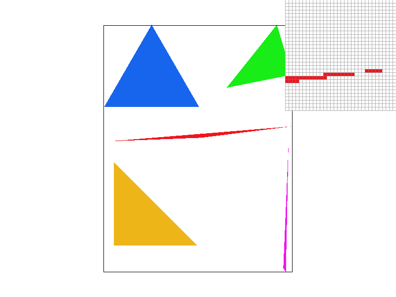
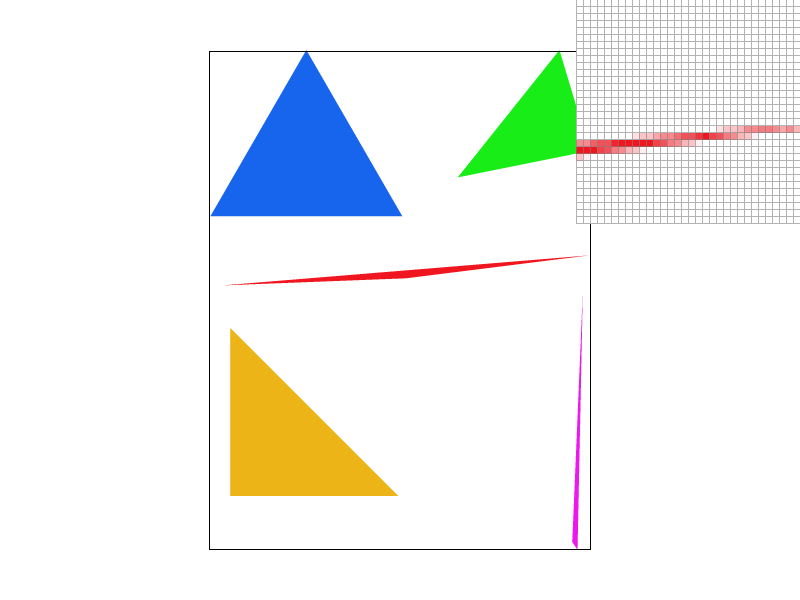
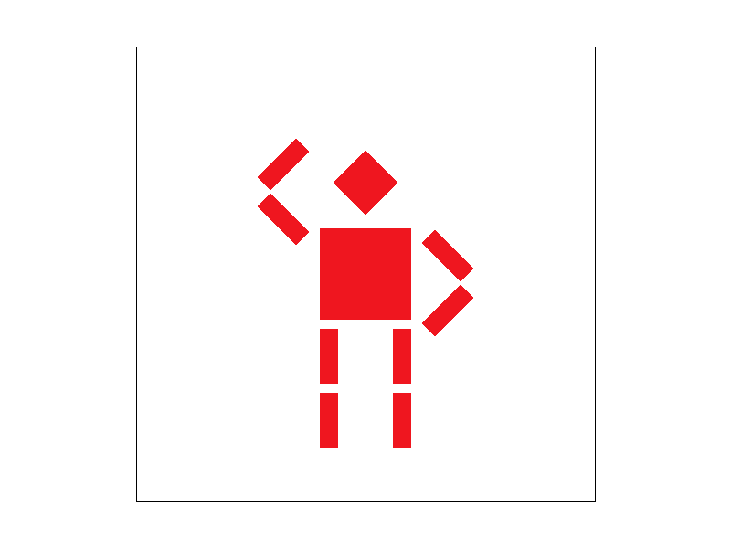
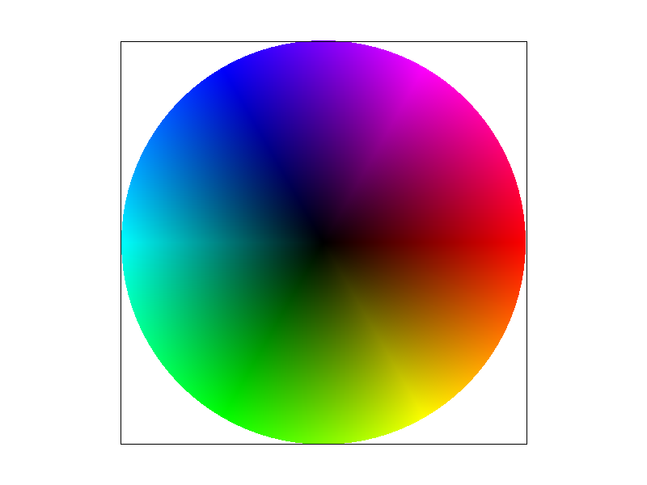
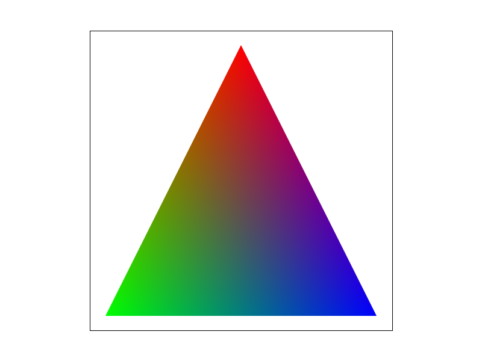
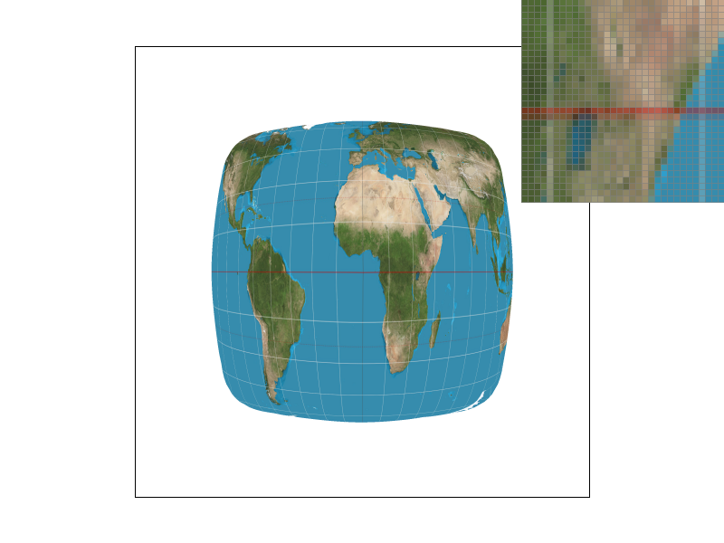
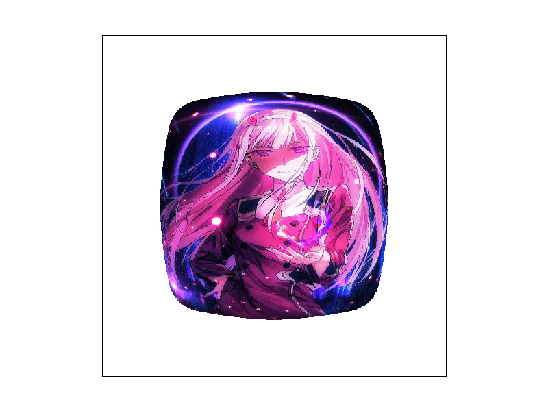

Overview
In this project, students were tasked to build a triangle-based rasterizer to render SVG files with textures.
In the first section of the project, students focused on creating algorithms to render basic triangles in the frame buffer with support for antialiasing in the form of supersampling. Additionally, students implemented simple transforms in the homogeneous coordinate space.
In the second section of the project, students implement various texturing methods for the triangles based on Barycentric coordinates. Initially, students started by implementing color interpolation based on Barycentric coordinates to smooth gradients and multi-colored triangles. Next, students implemented sampling from textures using mipmaps and various point and level sampling techniques.
From this project, I’ve gained insight on the rasterization pipeline and how computers manipulate visual data to generate smooth graphics on finite resolution displays. In particular, I found Barycentric coordinates to be an interesting way of creating interpolated color pixels to create extremely smooth gradients within triangles.
Section I: Rasterization
Part 1: Rasterizing single-color triangles
In this task, students were tasked to create an algorithm to render a single-color triangle given 3 points in xy-coordinate space.
My solution for this problem consisted of using the point-in-triangle test described in lecture to determine whether a pixel was contained by the triangle. The algorithm tests each pixel in the bounding box of the triangle, coloring only pixels that pass the test. (Because this algorithm naively tests every pixel in the bounding box, it is no worse than one that checks each sample within the bounding box of the triangle.)
Geometrically, this test consists of selecting 2 vertices of the triangle and forming a line which is later used to evaluate whether the point lies on the correct side of the triangle boundary. To determine whether a point is contained by a triangle, it must pass the line test for each pair of triangle vertices. To ensure correctness, the evaluated point must be “on or above” all edges of the triangle when testing edges in the counterclockwise direction. To account for various ordering of input vertices, I perform the line test on the 3rd input point given the first 2 input points to determine the ordering of the triangle and reorder inputs such that they are counterclockwise.
Part 2: Antialiasing triangles
In this task, students were tasked to add supersampling support to the rasterization pipeline. Given a supersample rate (r), a perfect square between 1 and 16, the goal was to sample at a higher resolution then supersample such that every pixel of the frame buffer corresponds to the average of r pixels of the sample buffer. This feature is especially useful to render cleaner edges that do not nicely align to pixel boundaries. Using supersampling, we can produce interpolated color pixels that can create “softer” edge at the pixel level, but a much cleaner (less jaggy) edge at a shape level.
To achieve this, I modified the rasterization pipeline to properly scale the sample buffer and correctly downsample to produce the frame buffer. This involved making changes to the following functions:
1. RasterizerImp::set_sample_rate()
This function is called when the application changes the supersample rate. To implement this, I set the inherent Rasterizer sample_rate to the new rate and resize the buffer to contain (width * height * scale) pixels where width and height pertain to the frame buffer dimensions. Finally, I clear the buffers to start rasterizing from a fresh buffer.
2. RasterizerImp::set_framebuffer_target()
This function is called when the application window is resized, resulting in a change in the frame buffer dimensions. Here, I changed the sample_buffer such that it is resized to account for the supersample rate.
3. RasterizerImp::resolve_to_framebuffer()
This function is called when the application wishes to draw the next frame. In this function, we implement the downsampling strategy. For each xy point in the frame buffer, the algorithm samples the corresponding sample_rate pixels in the sample buffer and computes an average color to be output.
Next, to take advantage of the new code infrastructure, I modified the rasterizing methods to be consistent with superscaling. This involved making changes to the following functions:
1. RasterizerImp::fill_pixel()
Previously, points and lines were rasterized by placing a single pixel in the sample buffer. However, doing this resulted in discoloration of said pixel in the frame buffer. This is because the color of the single pixel is averaged with other pixels when it is resolved to the frame buffer. To solve this, I implemented changes to fill_pixel() such that all of the supersample pixels corresponding to the pixel in the frame buffer are the same color.
2. RasterizerImp::rasterize_triangle()
This function was modified to support supersampling by scaling each of the coordinates of the triangle to match the scale of the sample_buffer. By upscaling the triangle coordinates, I effectively increase the bounding box and resolution of the triangle, forcing the algorithm to sample more frequently to correctly fill the triangle in the sample buffer.
|

|
|

|
As supersample rate increases, the triangle edges become smoother and more solid (no more floating pixels). This occurs because the sampling is occurring in higher resolution allowing thin corners to have more pixels define them. When we downsample and average, we now have intermediate colors to fill in the jagged gaps in our triangle.
Part 3: Transforms
In this task, students were instructed to implement the transforms defined according to the SVG specification.

|

|
Fig.3-2 features Cubeman waving "Hello"
Here, Cubeman was transformed using the implemented transform operations.
Section II: Sampling
Part 4: Barycentric coordinates
In this task, students were tasked to use Barycentric coordinates to interpolate the pixel colors within a triangle given its vertices and their respective color.
Barycentric coordinates are a way of representing points relative to the vertex points of a triangle.
Given a point p, and the points A, B, and C of a triangle, we can express point p as a linear combination/weighted average of A, B, and C.
Here, we say that the respective weights of A, B, and C that make up point p - (α, β, γ) - is the Barycentric coordinate of point p.
For a point inside the reference triangle, the Barycentric coordinates sum to 1.
We can leverage the properties of Barycentric coordinates to interpolate the color of a pixel inside a triangle by computing a
weighted average of the 3 vertex colors using the Barycentric coordinates as weights.
Fig.4-1 is an example of a triangle with vertex colors of red, blue, and green.
The use of Barycentric coordinates creates a smooth, uniform transition of colors within the triangle.
Putting many of these interpolated colored triangles together, we can get a color wheel as shown in Fig.4-2.
|

|

|
Part 5: "Pixel sampling" for texture mapping
In this task, students were tasked to implement pixel sampling of textures to texturize triangles using two different methods, nearest and bilinear. Here, pixel sampling refers to the process of obtaining a color for each xy coordinate in a particular triangle from a particular texture. This allows us to render multi-color triangles with pixel colors that are not confined to the interpolated colors of vertices. To implement this, I modified a variety of functions:
1. RasterizerImp::rasterize_textured_triangle()
This function is called to rasterize a triangle with a texture. This function is provided with the triangle vertices in the frame buffer (xy space) and the triangle vertices in the texture (uv space). To sample the texture of a point inside the triangle, I convert the xy point to its Barycentric coordinates and do the inverse operation to find the corresponding point in uv space.
2. Texture::sample()
This function is called by rasterize_textured_triangle() to provide the color of a point. Depending on the sampling parameters, it chooses between 2 sampling methods, sample_nearest and sample_bilinear, to compute the color of the pixel.
3. Texture::sample_nearest()
This function uses the nearest sample method to sample a color. Given uv coordinates and a mipmap level, the sample returns the color value of the nearest pixel. To do this, we scale the uv coordinates to match the width and height of the specified mipmap level. For this task, the mipmap level was set to 0.
4. Texture::sample_bilinear()
This function uses the bilinear sample method to sample a color. Given uv coordinates and a mipmap level, the sample returns the interpolated color value of the neighboring pixels. Like sample_nearest(), we scale the uv coordinates to match the width and height of the specified mipmap level. For this task, the mipmap level was set to 0.

|

|
|
|

|
At 1 sample per pixel, there is a significant difference between the nearest and bilinear sampling methods. In figure 5-3, we can see that the longitude and latitude lines are smoother and more complete than those in figure 5-1. At 16 samples per pixel, the difference between the nearest and bilinear sampling methods is much smaller and harder to perceive.
There will be large differences in the two methods when there is no supersampling and when the texture must be downsampled (texture is relatively large). With nearest sampling, adjacent pixels in the frame buffer will skip many texels, resulting in a blocky, pixelated texture. With bilinear sampling, each pixel color is interpolated using the surrounding sample texels to create a smoother render.
Part 6: "Level sampling" with mipmaps for texture mapping
In this task, students were tasked to add level sampling to the texture algorithm from task 5 to reduce aliasing in the texture. Level sampling works by sampling from different resolutions, or levels, allowing us to sample at lower resolution for higher frequencies to reduce aliasing. These levels are precomputed and stored in mipmaps which allow for a more efficient antialiasing than supersampling. To implement this, I modified the following functions:
1. RasterizerImp::rasterize_textured_triangle()
This function was updated to compute the uv coordinates of the sample point’s neighbors in the xy space. For any neighbor point outside the triangle boundary, the uv coordinate is defaulted to be that of the sample point. The additional computed uv points are used lated to compute an approximate rate of change of u and v in respect to x and y.
2. Texture::get_level()
This helper function is used to compute the level of the mipmap for a given sample point and its neighbors. Here, we compute an approximate derivative to determine which mipmap level to sample from using equations given in lecture. Larger rate of changes, or higher frequencies, result in a larger level and sampling from a reduced resolution texture.
3. Texture::sample()
This function was modified to support the various level sampling modes. For “level zero” (L_ZERO), the algorithm samples using only level 0. For “nearest level” (L_NEAREST), the algorithm samples from the level specified by get_level(). For “bilinear level interpolation” (L_LINEAR), the algorithm interpolates the results from sampling the level above and below the level specified by get_level().
At this point, our rasterizer is complete and can reduce aliasing by changing supersampling rates, pixel sampling methods, and level sampling methods. By observation, supersampling has the most antialiasing power but the worst runtime efficiency because it is both slow and memory hungry. This is because the frame buffer and the runtime scales linearly with the supersample rate. Comparing between level sampling and pixel sampling methods, we find that level sampling is more effective in reducing aliases, but takes more memory than pixel sampling because of the different resolution textures that need to be stored. In terms of speed, the two methods are about the same.
|
|
|
|

|
|
The above figures were generated by using a large texture to texturize a much smaller shape - resulting in lots of aliasing as seen in Fig.6-1. From Fig.6-3, it is apparent that level sampling results in smoother textures, but struggles to accomplish much antialiasing because of the lack of proper downsampling. In Fig.6-2, a majority of the aliasing is removed because bilinear sampling works well for sampling from much larger textures - the method averages neighboring pixels rather than only selecting the closest one. However, there is still a small amount of aliasing near the ends of the character's hair. In Fig.6-4, most of the aliasing in the texture is gone - the use of mipmapping and bilinear sampling allowing us to account for the high frequencies of the texture.
Part 7: Draw something interesting!
Putting everything together! Enjoy a nice render of Zero Two :]]
Happy Valentines Day!